CS184/284A Spring 2025 Homework 3 Write-Up
PathTracer
Link to webpage: https://cal-cs184-student.github.io/hw-webpages-Wang-Shaoyi/hw3/index.html
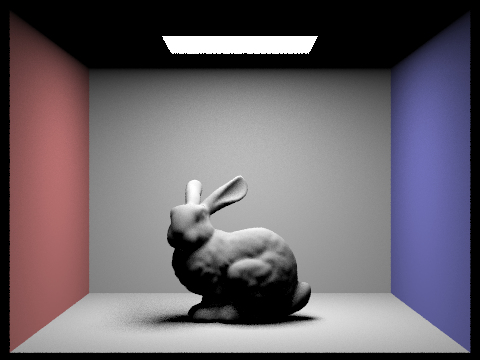
Overview
In this homework, we built a physically-based renderer from scratch, implementing the core components of a path tracer. We started with the fundamentals of ray generation and scene intersection in Part 1, where we created the geometric foundation by implementing camera ray generation, pixel sampling, and ray-primitive intersection tests for both triangles and spheres.
In Part 2, we tackled the performance challenge of ray tracing by implementing a Bounding Volume Hierarchy (BVH). This acceleration structure dramatically reduced render times by efficiently culling large portions of the scene that a ray cannot possibly hit.
Part 3 introduced direct illumination, where we implemented both uniform hemisphere sampling and importance sampling of lights. We learned that importance sampling converges much faster by directing samples toward actual light sources rather than random directions.
Through this homework, we gained a deep appreciation for how ray tracing connects mathematical concepts like geometric intersection, Monte Carlo integration, and importance sampling into a unified rendering framework. The most interesting insight was seeing how each component builds on the previous ones: accurate intersections enable correct visibility, BVH makes rendering feasible, and smart sampling strategies make it efficient.
Part 1: Ray Generation and Scene Intersection
Overview
In Part 1, we implemented the front end of a basic ray tracer: camera ray generation, pixel sampling, ray-triangle intersection, and ray-sphere intersection. The overall pipeline works like this: for each pixel, we generate one or more camera rays, trace those rays into the scene, test intersections against primitives, keep the nearest valid hit, and then visualize the result using normal shading. This part established the geometric foundation for the rest of the renderer, since later lighting computations depend on having correct primary rays and correct closest-hit intersection logic.
A key takeaway from this part was that ray tracing is fundamentally a geometric visibility problem. The camera is modeled as a pinhole camera with a virtual sensor plane, and each pixel sample corresponds to a ray in 3D. The primitive intersection routines then determine which surface that ray sees first. We also learned how barycentric coordinates provide a natural way to test whether a ray-plane hit lies inside a triangle and to interpolate vertex normals smoothly across the surface.
Ray Generation and Primitive Intersection Pipeline
The rendering process for Part 1 works as follows:
- For each pixel (x, y), we generate one or more sub-pixel samples.
- Each sample is converted from pixel coordinates into normalized image coordinates in [0,1].
- The normalized coordinates are mapped onto the camera's virtual sensor plane at z = -1 in camera space.
- A ray is emitted from the camera origin through that sensor-plane point.
- The ray direction is transformed from camera space to world space using the camera-to-world transform.
- The ray is intersected against scene primitives such as triangles and spheres.
- Only intersections with t in the valid ray interval [min_t, max_t] are accepted.
- Whenever a closer hit is found, the ray's
max_tis updated so farther intersections can be ignored. - The closest intersection is used for shading. In this part, we visualized the results using normal shading for debugging.
Camera Ray Generation
We implemented Camera::generate_ray(x, y) by mapping normalized image coordinates to the sensor plane using the camera field of view. If hFov and vFov are the horizontal and vertical field of view angles, then the half-width and half-height of the sensor plane are:
\( \text{half\_w} = \tan(\text{hFov} / 2), \quad \text{half\_h} = \tan(\text{vFov} / 2) \)
The sensor-plane point in camera space is:
\( p_{\text{cam}} = (-\text{half\_w} + 2 \cdot \text{half\_w} \cdot x, \; -\text{half\_h} + 2 \cdot \text{half\_h} \cdot y, \; -1) \)
We normalize this vector to get the ray direction in camera space, transform it into world space using c2w, and create a ray with origin pos. We initialize min_t and max_t using the near and far clip planes so that only visible intersections are considered.
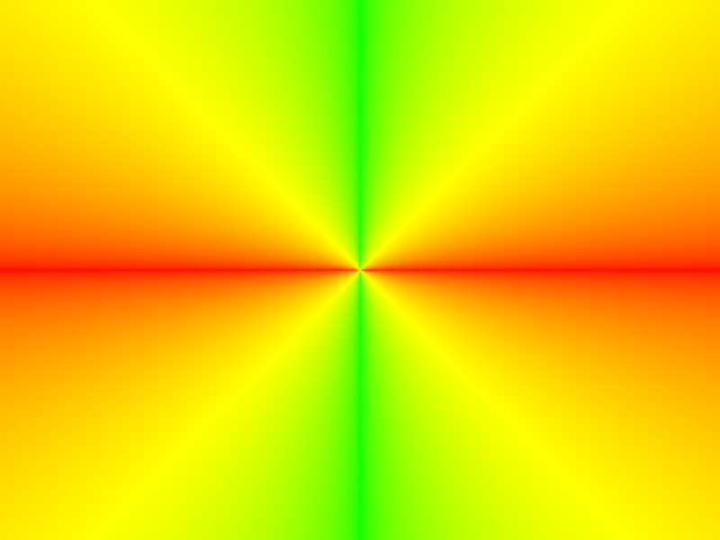
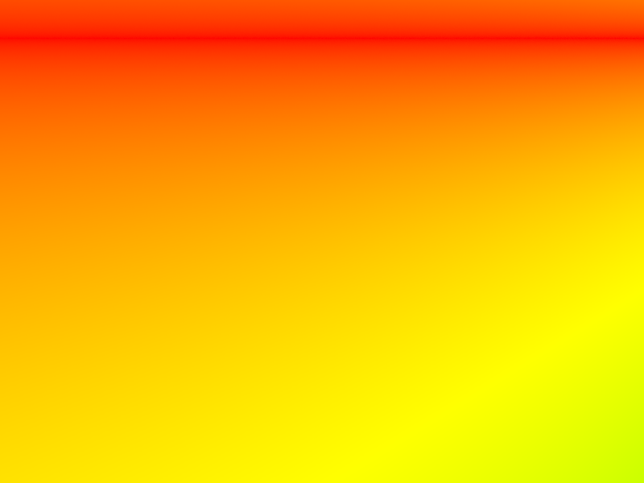
Pixel Sampling
In PathTracer::raytrace_pixel, we sampled within each pixel and averaged the radiance estimates from all samples. For each sub-pixel sample (dx, dy), we computed normalized coordinates:
\( u = \frac{x + dx}{width}, \quad v = \frac{y + dy}{height} \)
Then we generated a camera ray for (u, v), traced it into the scene, accumulated the returned radiance, and averaged over all samples for the final pixel color. For Part 1, this mostly served as a debugging mechanism for validating our camera and intersection code.
Primitive Intersection
Once the camera ray is generated, the renderer tests it against scene primitives. For each primitive, a hit is valid only if the solution lies within the ray's current interval [min_t, max_t]. This prevents accepting intersections behind the camera or farther than the closest hit already found. The nearest valid hit is stored in an Intersection record, which contains the hit distance t, surface normal n, primitive pointer, and BSDF pointer.
Triangle Intersection Algorithm
For triangle intersection, we implemented the Moller-Trumbore algorithm. We found this algorithm useful because it directly solves for the ray parameter t and the barycentric coordinates of the intersection point without first explicitly computing the triangle plane equation.
Let the triangle vertices be \(p_1, p_2, p_3\), and define the two edge vectors:
\( e_1 = p_2 - p_1, \quad e_2 = p_3 - p_1 \)
A point on the triangle can be written in barycentric form as:
\( P = p_1 + b_1 \cdot e_1 + b_2 \cdot e_2 \)
A point on the ray is:
\( P = o + t \cdot d \)
Setting these equal gives a system of equations for t, \(b_1\), and \(b_2\). The Moller-Trumbore algorithm solves this system efficiently. In our implementation:
- We first compute a determinant term to test whether the ray is parallel to the triangle plane.
- If the determinant is near zero, there is no stable intersection.
- Otherwise, we solve for barycentric coordinates \(b_1\) and \(b_2\).
- We reject the hit if either coordinate is negative or if \(b_1 + b_2 > 1\), because that means the point lies outside the triangle.
- We then solve for t, the distance along the ray.
- We accept the hit only if t lies within [min_t, max_t].
If the hit is valid, we update r.max_t = t so that later intersection tests can ignore anything farther away. For the surface normal, we use barycentric interpolation of the three vertex normals:
\( n = b_0 \cdot n_1 + b_1 \cdot n_2 + b_2 \cdot n_3, \quad b_0 = 1 - b_1 - b_2 \)
and normalize the result. This produces smooth normal shading across the triangle surface instead of a flat faceted look.

Sphere Intersection
For sphere intersection, we substituted the ray equation into the implicit sphere equation. If the sphere center is c and radius is R, then points on the sphere satisfy:
\( |P - c|^2 = R^2 \)
Substituting \(P = o + td\) gives a quadratic equation in t. We solved this quadratic, checked the discriminant, and selected the closest valid root within [min_t, max_t]. As with triangle intersections, we updated r.max_t when a valid hit was found. The sphere normal is computed analytically as the normalized vector from the sphere center to the hit point.
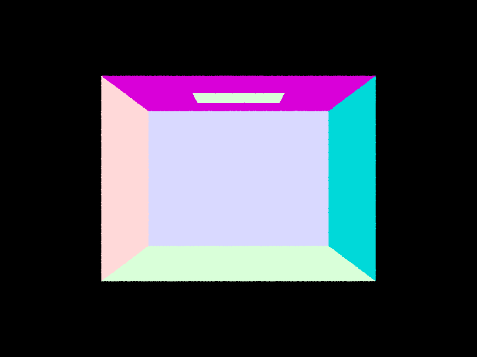
Normal-Shaded Results on Small .dae Files
Below are normal-shaded renders for a few small scenes used to validate our implementation.
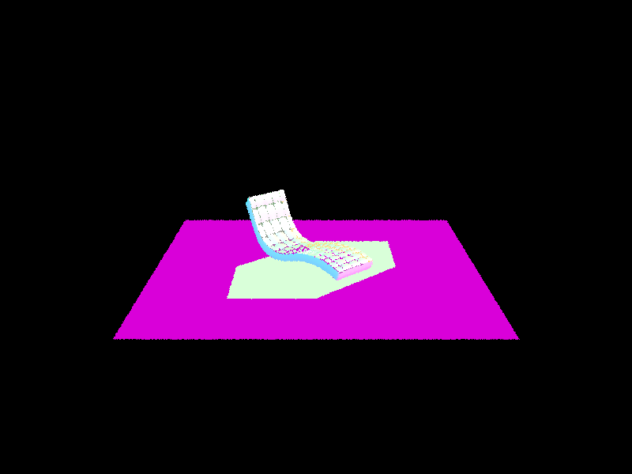
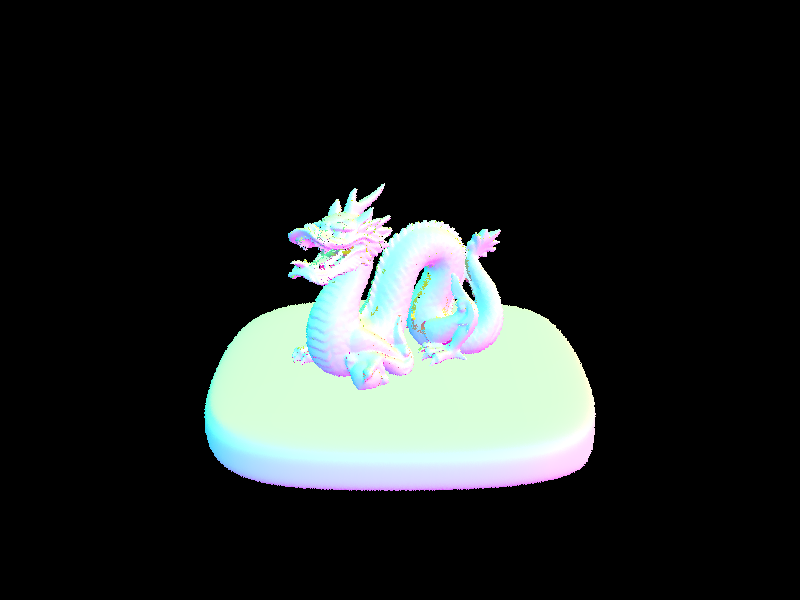
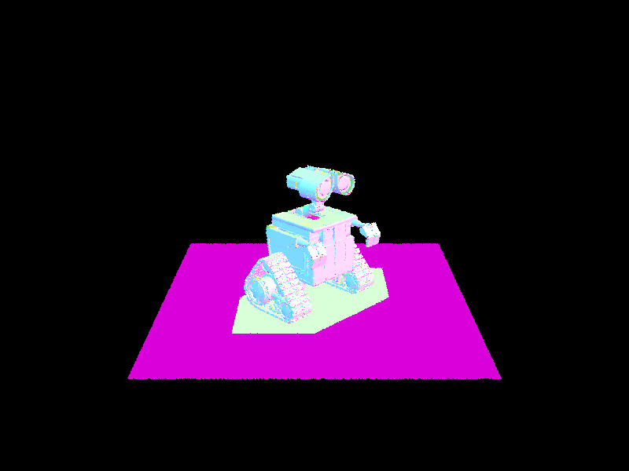
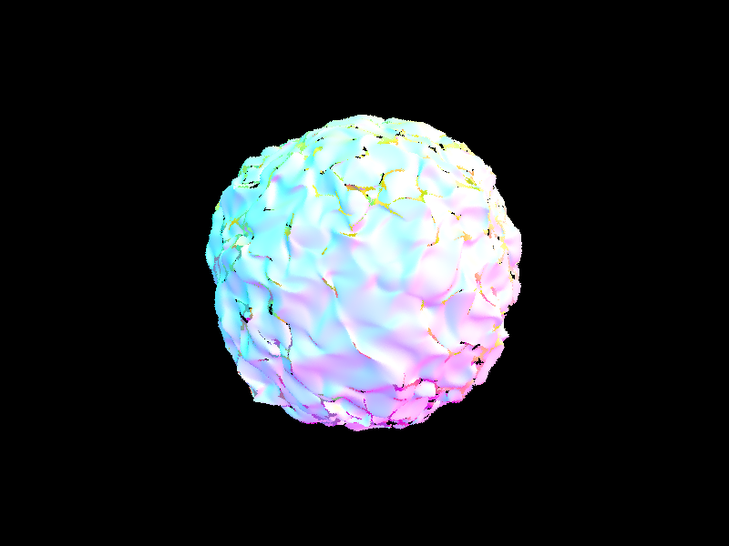
Notes / Debugging Reflections
A few details were especially important for getting correct results:
- The camera uses a sensor plane at z = -1 in camera space, so the viewing direction is along negative z.
- The input image coordinates to
generate_rayare normalized and use the bottom-left corner as (0, 0). - Ray directions should be normalized before and after transformation into world space.
- The nearest-hit logic depends on correctly updating
max_t. - For triangle normals, barycentric interpolation is necessary to match the expected smooth normal shading output.
Overall, Part 1 helped us connect the camera model, geometric intersection tests, and shading pipeline into one coherent rendering process.

Part 2: Bounding Volume Hierarchy
BVH Construction Algorithm
We construct the BVH recursively over the current range of primitives. For each call, we first compute two bounding boxes: one that encloses all primitives in the range, and one that encloses the centroids of those primitives. The primitive bounding box becomes the bounding box stored in the current BVHNode.
If the range contains at most max_leaf_size primitives, we stop recursing and make the node a leaf by storing the start and end iterators. Otherwise, we choose the split axis as the longest axis of the centroid bounding box. We then split at the midpoint of that axis and use std::partition to separate primitives whose centroids fall to the left of the split from those on the right.
Our splitting heuristic is a longest-axis midpoint split on primitive centroids. We chose this approach because it is very cheap to evaluate, usually creates a reasonably balanced hierarchy, and keeps construction fast. To avoid degenerate cases where all primitives fall on one side of the midpoint, we fall back to a median split with std::nth_element, which guarantees progress and prevents infinite recursion. After the split, we recursively build the left and right child nodes.
Normal-Shaded Renders
The following images were generated directly by the renderer in windowless mode using the -f flag.
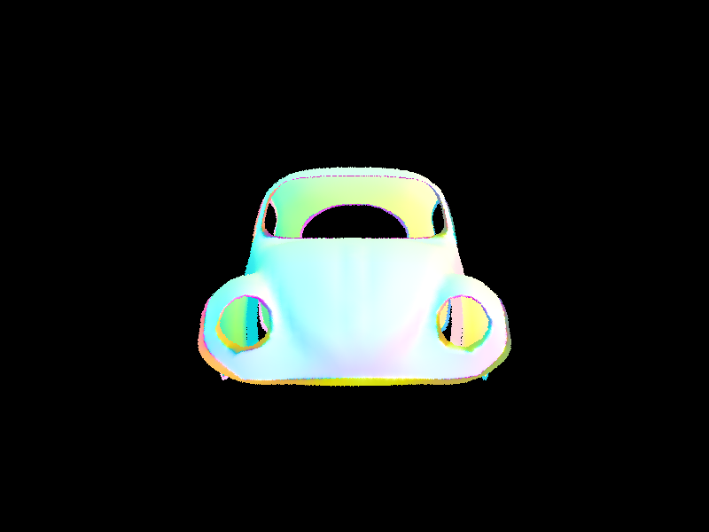
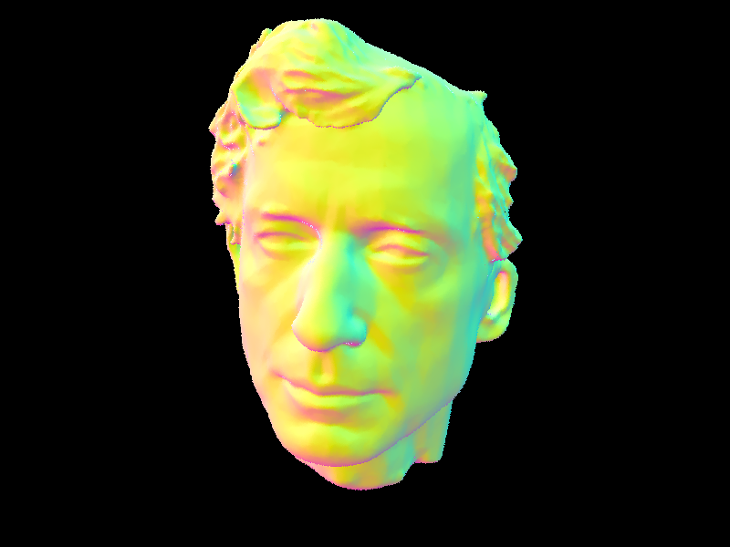
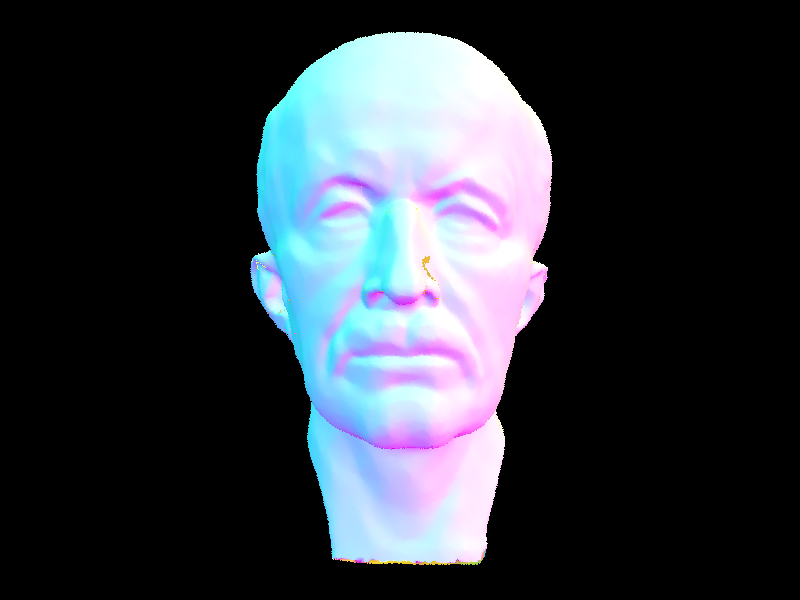
Timing Comparison
We compared render times using the same settings for every run: -t 8 -s 1 -r 320 240. For the baseline without BVH acceleration, we forced the accelerator to build a single leaf containing every primitive, so each ray effectively tested against the full primitive list. The BVH timings below are from the current implementation.
| Scene | Primitives | Without BVH | With BVH | Speedup | Avg. tests/ray (no BVH) | Avg. tests/ray (BVH) |
|---|---|---|---|---|---|---|
| Cow | 5,856 | 0.1823s | 0.0083s | 22.0x | 836.22 | 9.88 |
| Beetle | 7,558 | 0.2510s | 0.0094s | 26.7x | 1112.72 | 10.43 |
| Peter | 40,018 | 1.3426s | 0.0094s | 142.8x | 5901.67 | 8.04 |
The results show that BVH acceleration becomes more valuable as scene complexity increases. Even on smaller meshes like cow.dae and beetle.dae, the BVH reduces render time by roughly one order of magnitude, while on peter.dae the speedup exceeds two orders of magnitude. The intersection statistics show why: the naive baseline performs hundreds to thousands of primitive tests per ray, while the BVH reduces that to roughly 8 to 10 tests per ray. In our runs, BVH build time stayed very small relative to rendering time, so the construction overhead was negligible compared to the savings during traversal.
Part 3: Direct Illumination
For Part 3, we implemented a Lambertian diffuse BSDF, added zero-bounce emission, and then added two direct-lighting estimators: uniform hemisphere sampling and direct light importance sampling. In our final Part 3 path, one_bounce_radiance() dispatches between the two estimators based on direct_hemisphere_sample, and est_radiance_global_illumination() returns the sum of zero-bounce and one-bounce radiance.
Task 1: Diffuse BSDF
We implemented DiffuseBSDF::f() as the Lambertian BRDF reflectance / PI, which matches the constant diffuse reflectance model from lecture. We also implemented DiffuseBSDF::sample_f() by drawing a cosine-weighted hemisphere sample and then reusing f(wo, wi) to evaluate the BSDF at that sampled direction. This gives us a diffuse material that reflects incoming radiance equally in all directions up to the Lambertian cosine factor handled by the rendering equation.
Task 2: Zero-Bounce Illumination
We implemented zero_bounce_radiance() by returning isect.bsdf->get_emission(). This captures light that reaches the camera directly from an emissive surface without any reflection event. After that, we updated est_radiance_global_illumination() so that rays that miss the scene return the environment light if one exists, while rays that hit the scene accumulate emission from the hit surface and the one-bounce direct-lighting term.
Task 3: Direct Lighting with Uniform Hemisphere Sampling
For estimate_direct_lighting_hemisphere(), we first build a local coordinate frame at the shading point so that the surface normal aligns with the local z axis. We then sample scene->lights.size() * ns_area_light directions uniformly over the hemisphere using hemisphereSampler. Each sampled direction is transformed into world space for shadow-ray intersection, while the BSDF evaluation stays in local space. If the shadow ray hits an emissive surface, we accumulate the Monte Carlo contribution:
f(w_o, w_i) * L_e * cos(theta_i) / pdf
and average the result over all hemisphere samples. This estimator is unbiased, but it is noisy because most uniformly sampled directions do not actually hit the light source.
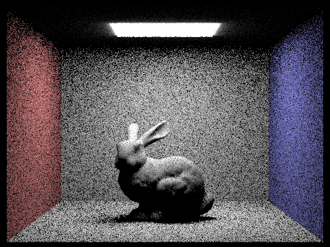
Task 4: Direct Lighting by Importance Sampling Lights
For estimate_direct_lighting_importance(), we loop over every light in the scene and sample each one directly. Delta lights are sampled once, while area lights are sampled ns_area_light times. For each light sample, sample_L() returns the incoming radiance L_i, the world-space direction to the light, the distance to the light, and the sampling PDF. We transform the sampled direction into local space, discard samples below the surface, and cast a shadow ray with min_t = EPS_F and max_t = distToLight - EPS_F so that only blockers between the hit point and the light count as occluders. If the sample is not blocked, we accumulate:
L_i * f(w_o, w_i) * cos(theta_i) / pdf
then average across the samples taken for that light and sum across all lights. This estimator spends its samples on actual light directions, so it converges much faster than uniform hemisphere sampling and also works for delta lights.
Additional Scene Renders
To compare the two direct-lighting implementations on more than one geometry configuration, we also rendered CBdragon.dae and CBspheres_lambertian.dae with the same sampling settings and toggled only the direct-lighting strategy.
CBdragon
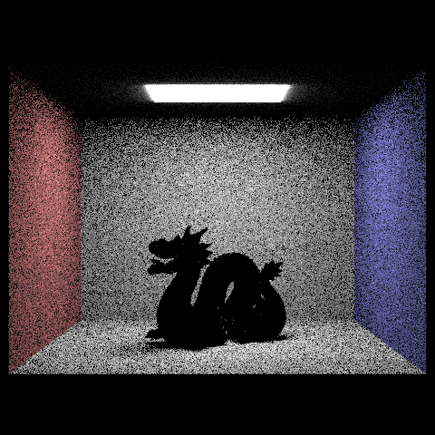
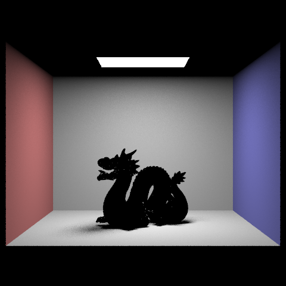
The CBdragon scene produced an interesting result. The Cornell box itself renders correctly in both images: the area light, walls, floor shading, and floor shadow all behave as expected, so the direct-lighting implementation is working on the diffuse parts of the scene. The dragon remains black because this asset is tagged with a mirror material in the scene file, and Part 3 only supports diffuse direct lighting. Since specular BSDF handling is completed later in the assignment, the renderer cannot yet produce the reflected contribution that would make the dragon visible. Even so, the scene is still useful as a sanity check that the rest of the environment and shadowing pipeline are functioning correctly.
CBspheres_lambertian
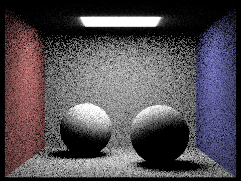
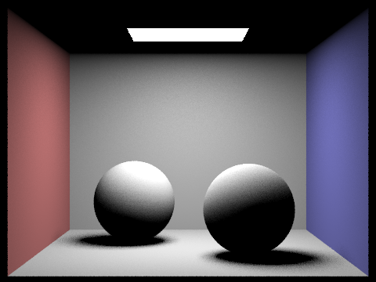
On CBspheres_lambertian, the sampling difference shows up clearly on the curved objects and the floor contact shadows. The hemisphere estimator produces more visible speckling on the floor and across the shaded sides of the spheres, while importance sampling gives smoother gradients and cleaner soft-shadow transitions under the same -s 16, -l 8 budget.
Soft Shadow Noise Comparison
We used CBbunny.dae for the soft-shadow comparison because the area light produces a clear penumbra on the floor around the bunny. In all four renders below, we fixed the pixel sampling rate to -s 1 and changed only the number of light samples -l.
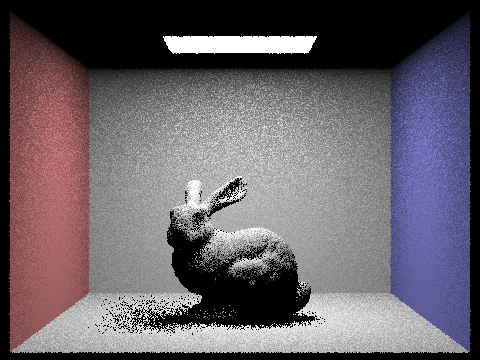
As we increase the number of light samples, the shadow boundary on the floor becomes progressively more stable and the grain in the penumbra decreases. The -l 1 render has the highest variance and the noisiest shadow transition. At -l 4, the silhouette is already more recognizable, but the penumbra is still visibly speckled. At -l 16, the shadow becomes substantially smoother, and by -l 64 the penumbra is the cleanest of the four while preserving the same overall lighting structure.
Uniform Hemisphere vs. Light Sampling
With the same render settings (-s 16, -l 8, -r 480 360), uniform hemisphere sampling is visibly noisier than importance sampling because it wastes many samples on directions that never reach the area light. The result is a darker, grainier estimate of the bunny and its soft shadow, especially on the floor and around the lower silhouette. In contrast, light sampling concentrates work on directions that actually matter for direct illumination, so the penumbra is cleaner and the lighting is more stable at the same sample budget. In our runs, the hemisphere render traced about 7.35M BVH rays in 1.52s, while the importance-sampled render traced about 6.04M rays in 1.38s. The main improvement is not just speed, but sample efficiency: importance sampling puts computation where the light actually is.